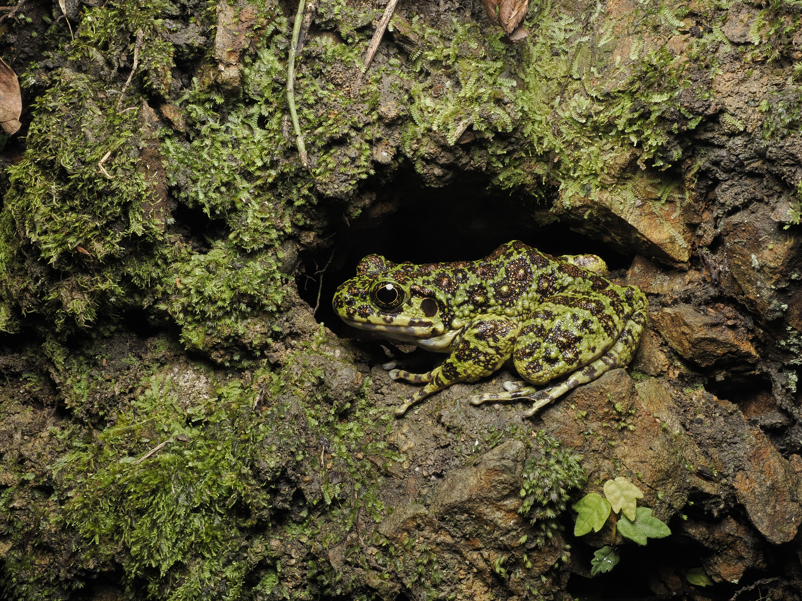

奄美赤蛙
体长约3.2〜4.6厘米。11月至1月为繁殖期。栖息于平地到山地的森林及河流周边。湿度较高或 下雨时会变得活跃，繁殖期会聚集在小池塘、涌泉水潭等处。林道上也能见到它的身影.

CREATURES / RYOUSEIRUI
下雨的夜晚，各种各样的鸣声在森林和水边回荡。奄美大岛的水边，生活着只有这座岛屿才有的两栖类。
ABOUT
奄美大岛栖息着生活在森林、溪流、水田等各种环境中的蛙类和蝾螈。下雨的夜晚，各自不同的鸣声会在森林中回荡。
岛上特有的种类也很多，外形、大小和栖息场所各不相同。有的栖息在树上，有的在水边被发现，也有的藏身于落叶之下。
邂逅它们时，请不要长时间照射灯光，静静地欣赏它们的姿态和鸣声即可。
请勿触碰发现的个体，并注意脚下，以免伤害水域、卵或幼体，静静地观察即可。
AMPHIBIANS OF AMAMI
介绍在奄美大岛的森林和水边能遇见的蛙类与蝾螈。点击照片或名称即可查看该物种的详细页面。
体长约3.2〜4.6厘米。11月至1月为繁殖期。栖息于平地到山地的森林及河流周边。湿度较高或 下雨时会变得活跃，繁殖期会聚集在小池塘、涌泉水潭等处。林道上也能见到它的身影.
体长约4.5〜7.7厘米。12月下旬至5月左右为繁殖期。分布于低地至山地，栖息在池塘、水田等 静水域周边的森林中。湿度较高或下雨时会活跃地鸣叫，并在树枝上或岸边的草丛中产下.

体长约5.6〜10.1厘米。10月至5月为繁殖期。栖息于山地溪流周边。体形纤细、姿态优美，熟 悉之后即使远远望去也能辨认出来。体色丰富多样，个体间差异较大。已被鹿儿岛县指定.

体长约3〜4厘米。3月至6月为繁殖期。栖息于平地森林、灌木丛和农田，在水田等静水域产卵。 湿度较高的白天和下雨的夜晚会变得活跃，产卵期会在水田附近大合唱。它常待在树枝顶端等.

体长约2.2〜3.2厘米。全年均可繁殖(主要集中在3月至7月)。栖息范围很广，从沿海低地到山 地、林缘草地乃至民宅周边都能见到。湿度较高或下雨时会变得活跃。头部小而四肢粗壮.

体长约7.4〜13.7厘米。2月末至6月左右为繁殖期。栖息于山地源头水流平缓的溪谷。被誉为日 本最美丽的蛙类，已被鹿儿岛县指定为天然纪念物及国内稀有野生动物种，包括卵在内均.

体长约9〜14厘米。4月至10月为繁殖期。主要栖息于山地，但在农田和公园等地也能见到。湿 度较高或下雨时会变得活跃，也常出现在道路上。雄性体型更大，除外来引入的牛蛙外，是日.

体长约2.5〜4厘米。4月至10月为繁殖期。从山间溪流到市区的积水都能适应，是奄美大岛最常 见的蛙类。湿度较高或下雨时鸣叫尤为活跃。雄性呈美丽的黄色，叫声也十分动听.

全长约14〜20厘米。1月至4月左右为繁殖期。为奄美大岛、请岛、德之岛的特有种，栖息于森 林及农田周边。冬季温暖的日子里会变得活跃，繁殖期会在水边的落叶下产卵。体色为黑褐色.

雄性全长约14厘米，雌性约18厘米。分布于奄美大岛、请岛、加计吕麻岛、与路岛等岛屿，在池塘、水 田及溪流缓流处繁殖。9月过后大多数个体会离开水域，到了12月左右的繁殖期，水.

EXPLORE MORE
选择一个分类，了解更多奥美大岛的生物。
NIGHT FIELD TOUR
跟着向导一起在夜间森林中寻找生物。
查看夜间旅行团详情及费用 →